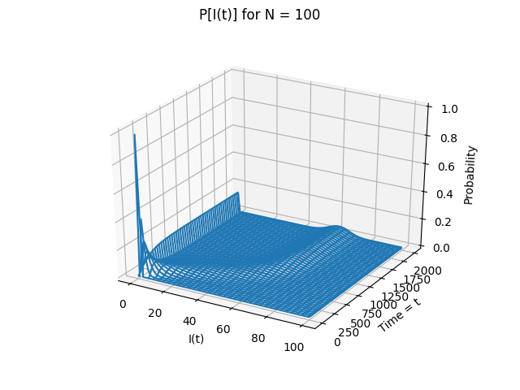
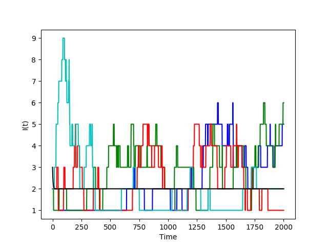

With social media now being the single most effective way to spread information, we see that pretty much every company has a Facebook or Instagram account to further promote its product and create a sense of connection among consumers. By making use of the existing structures of these social networks, successfully executed viral marketing can further provide a business with an unparalleled vehicle for rapid, widespread exposure at minimal cost. This method of advertising is unique in that it is based on natural behavior, depending on interpersonal contact to spread, similar to a virus.
As with viruses, the extent to which a marketing campaign will go viral more than anything is a matter of luck. Take for example the Sunny Co. Red suit Instagram promotion (Summer ’17) which got almost 350,000 unique reposts: such virality would be a dream come true for the thousands of growth hackers and social media marketers out there. Here we analyze viral marketing through the perspective of an epidemiological model and run simulations in Python.
To model this, let’s consider the SIR model (commonly used in epidemic analysis) as a discrete time Markov process since a purely deterministic model cannot reasonably account for the high variability involved in a luck-based phenomena.
We will assume constant population size $N$ ie. at any time $t$, $N = S(t) + I(t) + R(t)$. The SIR model assumes deterministic governing equations: \[ \frac{d}{dt}S = -\frac{\beta}{N} S(t) I(t) \] \[ \frac{d}{dt} I = \frac{\beta}{N} S(t) I(t) - \gamma I(t) \] \[ \frac{d}{dt} R = \gamma I(t)$ \] Since the population size remains constant and $R$ is an absorbing state with $R(t) = N - I(t) - S(t)$ we have a bivariate process taking independent random variables $S$ and $I$ each with state space $ \{0,1,…,N \}$ and joint transition density $p_{s,i}(t) = \mathbb{P}\left\{S(t + \Delta t), I(t + \Delta t) = s,i | \mathcal{F}\right\}$
Let’s define $\Delta t$ as a time increment significantly small that $S$ and $I$ may only change by size 1. By this property, $S(t + \Delta t) - S(t)$ and $I(t + \Delta t) - I(t)$ share state space $\left\{-1,0,1 \right\}$ so we can define conditional transition probabilities \[ \mathbb{P}(S_{t+1}, I_{t+1} = w,x | S_t, I_t = y,z) = \begin{cases} \beta \frac{yz}{N} \Delta t, & \text{if $\Delta (S,I)= (-1,1)$} \\ \gamma z \Delta t, & \text{if $\Delta (S,I)= (0,-1)$} \\ bz \Delta t, & \text{if $\Delta (S,I)= (1,-1)$} \\ b(N - y - z) \Delta t, & \text{if $\Delta (S,I)= (1,0)$} \\ 1 - \frac{yz}{N} \beta \Delta t - (\gamma z + b(N-y)) \Delta t, & \text{if $\Delta (S,I) = (0,0)$} \end{cases} \] given birth rate $b$ and $\Delta (S,I) = (w - y, x - z)$
Let's consider a network of 100 individuals with the assumption that each individual is connected to 25% of the population. This gives us $N = 100, \beta = 0.25$. We will use $b=1$ to maintain constant population size. Setting $\Delta = 0.1$ we can then generate the transition probability matrix mentioned above. We will set $I_0 = 2$ ie. two people post the advertisment initially, and now evaluate the size of space $I$ over 2000 units of time to get:
 We see that while it is completely unlikely probabilistically that the entire population reposts the advertisement (first figure), there is a small chance $(< 0.1)$ that up to 80% of the population has been infected by the end of time duration. Each individual color in the second figure represents a sample path of $I(t)$ simulated over interval $\lbrack0,2000\rbrack$. The black line represents the deterministic solution to the governing equation \[ I(t) = e^{\frac{\beta}{N}S - \gamma} + 2 \] for comparison. While it seems that on average no more than 5 individuals were reposting the advertisement at any given time, under the assumption that each individual is connected to 25% of the population we can assume that the majority of the entire population has at least seen it by time $t=2000$